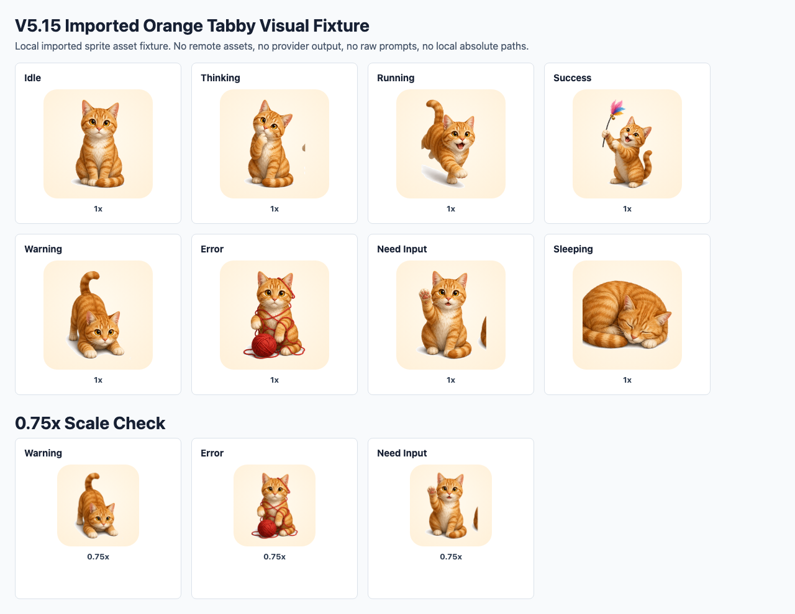
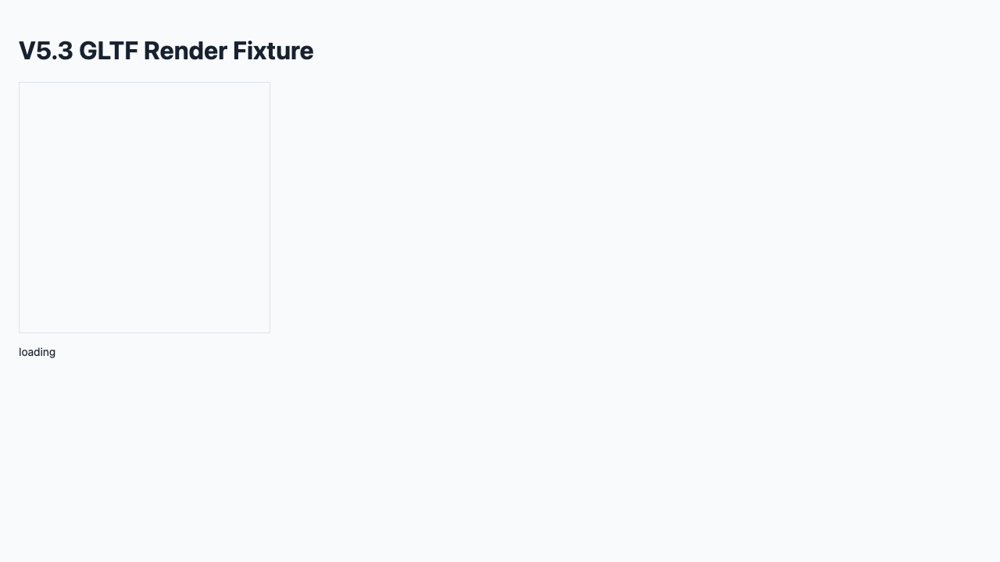

1. 本地照片隐私边界
用户可选择本地猫照片或只输入 traits。系统只处理安全摘要和用户确认描述，不保存原图、源文件名、EXIF/GPS 或完整路径。
本页汇总截至 V7 scoped Productization Gate 的已验收能力。页面引用本地 evidence 截图和报告，不扩大声明：真实 provider 集成、自动 photo-to-3D、广义 3D ready、生产签名发布仍未就绪。
用户可选择本地猫照片或只输入 traits。系统只处理安全摘要和用户确认描述，不保存原图、源文件名、EXIF/GPS 或完整路径。
把用户确认的毛色、眼睛、花纹、尾巴、风格等 metadata 转成覆盖 8 个核心动作的本地 prompt pack、manifest 模板和导入清单。
生成给外部 AI/工具使用的步骤说明、命名规则、license/attribution checklist 和本地导入验证要求；应用默认不上传、不调用 provider。
明确 provider 上传/执行/密钥接收默认禁用。当前只通过 feasibility-only 边界，不代表 provider integration verified。
生成资产必须走本地 manifest import、GLTF/GLB deep scan、外部资源拒绝、未知 required extension 拒绝等验证后才可进入运行态。
已验证导入资产可以按 PetInstance 激活，并映射到 idle、thinking、running、success、warning、error、need_input、sleeping 等核心状态。
codex exec --json 的可靠状态映射。/hooks review/trust。

| 领域 | 当前状态 | 边界 |
|---|---|---|
| 上传照片生成 3D | 不支持自动生成；支持本地照片/traits 生成说明和导入流程。 | 不得声明 automatic photo-to-3D ready。 |
| Provider 生成 | feasibility-only consent boundary。 | 没有真实 provider smoke，不得声明 provider integration verified。 |
| 3D 渲染 | 有本地 GLTF prototype 和 scoped evidence。 | 不得声明广义 3D ready、Rive ready、Live2D ready。 |
| Codex 状态映射 | Wrapper-managed exec JSONL 和 managed TUI hooks scoped passed。 | already-open Codex 自动监听、OS-level binding ready、all workflows verified 仍不支持。 |
| 生产分发 | 本地 macOS developer workflow scoped accepted。 | 未达到 production signed release、Windows、cross-platform ready。 |